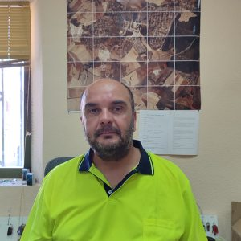

Equipo de Gobierno
El equipo de gobierno del Ayuntamiento de Pioz trabaja cada día para mejorar la calidad de vida
de todos los vecinos y vecinas, gestionando los servicios municipales con transparencia y compromiso.
Manuel López Carvajal
Alcalde Presidente
- Coordinación general del gobierno municipal
- Representación institucional del Ayuntamiento
- Presidencia de los plenos municipales
- Dirección de la política municipal
Contacto: 949 272 076 | Horario: L-V 9:00-14:00
Alejandro Porcar Rodríguez
Concejal
- Parques y Jardines
- Medio Ambiente
- Festejos
- Mantenimiento
- Obras
- Gestión de Residuos
Susana Cisneros Granado
Concejala
- Sanidad
- Economía
- Administración General
- Fomento Industrial
- Igualdad
Hilario Fernández Blázquez
Concejal
- Cultura
- Juventud
- Participación Ciudadana
- Protección Civil
- Transparencia
- Asociaciones
- Movimientos Juveniles
Antonino Delgado Menor
Concejal
- Tecnología y Redes
- Seguridad
- Eficiencia Energética
- Transporte
- Movilidad Urbana

Carlos Alberto Torre del Olmo
Concejal
- Hacienda
- Personal
- Recursos Humanos
- Empleo
- Bienestar Animal
- Mercado